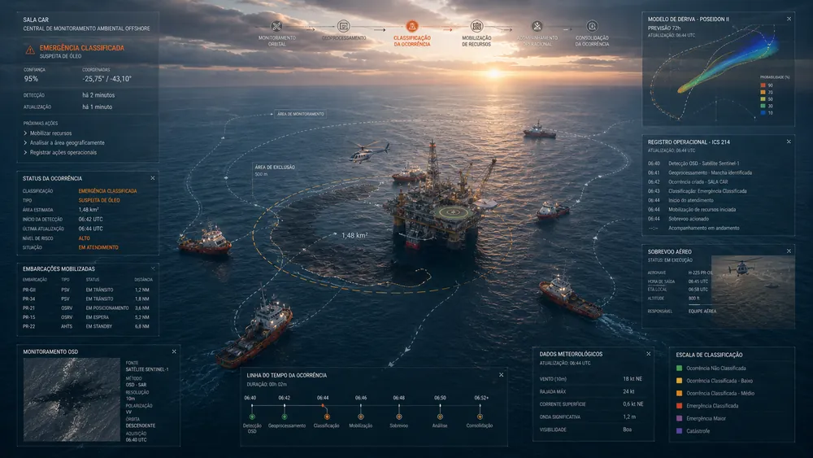

Papel
- Senior Product Designer
- Plataformas B2B
- Sistemas internos
- Workflows complexos
- Ambientes regulados
Ajudo empresas a transformar fluxos confusos, dados dispersos e regras complexas em produtos digitais fáceis de operar.
Mapeio fluxos, regras, usuários e decisões para transformar sistemas complexos em produtos mais claros.
Identifico quem usa, quem decide, quais regras importam e onde o fluxo quebra.
Transformo processos dispersos em jornadas, estados, permissões e prioridades claras.
Crio interfaces que reduzem esforço, orientam ação e deixam o sistema mais fácil de operar.
Testo hipóteses, alinho áreas envolvidas e refino a solução antes da implementação.
Cases em plataformas internas, produtos B2B e sistemas de decisão. Os setores mudam. O problema é o mesmo: organizar complexidade para melhorar a operação.

Coordenação offshore crítica para monitoramento ambiental e resposta operacional em tempo real.

Infraestrutura logística nacional para monitoramento distribuído e gestão de rupturas operacionais.

Sistema territorial de inteligência agronômica para análise ambiental e suporte à decisão agrícola.

Arquitetura financeira modular para operações PJ em ambientes regulados.
Quando há número validado, ele aparece. Quando o impacto é estrutural, a evidência é descrita com precisão.
Consolidação de relatórios operacionais reorganizada para leitura contínua em contexto offshore. O sistema integra informações previamente distribuídas entre monitoramento orbital, análises geoespaciais e mobilização de recursos em um único fluxo operacional contínuo.
Informações agrícolas reorganizadas em torno da cultura como unidade central de análise, conectando dados técnicos, comparação de indicadores e registro de decisões dentro de um fluxo estruturado.
Estrutura de supply chain organizada para leitura de disponibilidade, ruptura e coordenação logística. A plataforma passou a refletir o estado real da operação, transformando dados dispersos em uma visão operacional compartilhada.
Jornada PJ estruturada com validações, estados e fluxos aderentes a exigências operacionais e regulatórias. A conta digital foi pensada para pequenas empresas sem remover a segurança e a conformidade bancária do processo.
Senior Product Designer para plataformas B2B, sistemas internos e operações complexas.
Sou Senior Product Designer com 20 anos em design digital e mais de 15 anos em UX/Product Design.
Meu trabalho é organizar fluxos, informação e decisões em produtos digitais usados por times de operação, negócio e tecnologia.
Atuei em projetos para Petrobras, Bayer, Ambev, Banco do Brasil, Bradesco, Claro, Globo, iFood, BMG e Youse. São setores diferentes, mas o desafio se repete: transformar complexidade em sistemas mais claros, confiáveis e fáceis de operar.
Não parto da tela. Parto do problema, do fluxo, das regras e das decisões que o sistema precisa sustentar.
Para vagas sêniores, projetos enterprise e conversas técnicas sobre produto, operação e decisão.
Senior Product Designer para produtos B2B, sistemas internos e operações complexas.
Diagnóstico e desenho de fluxos, plataformas internas e produtos digitais com alta complexidade.
Arquitetura da informação, prototipação, IA aplicada e clareza operacional.